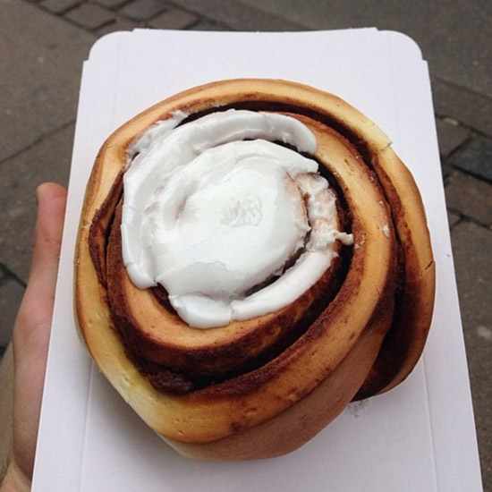
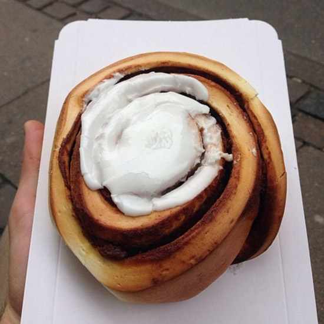
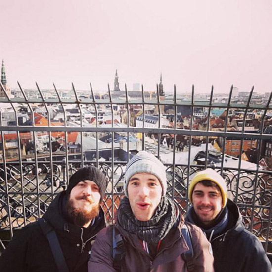
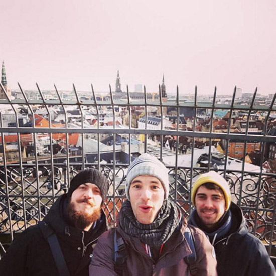
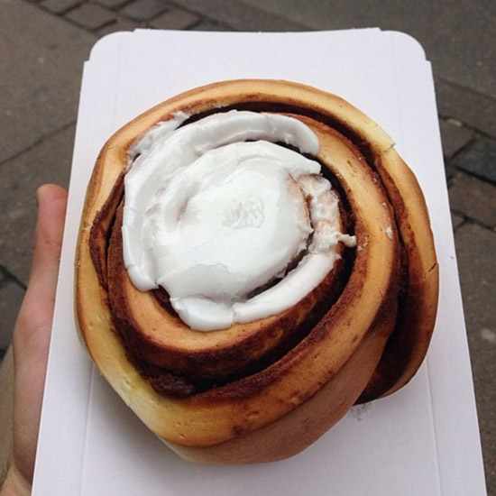
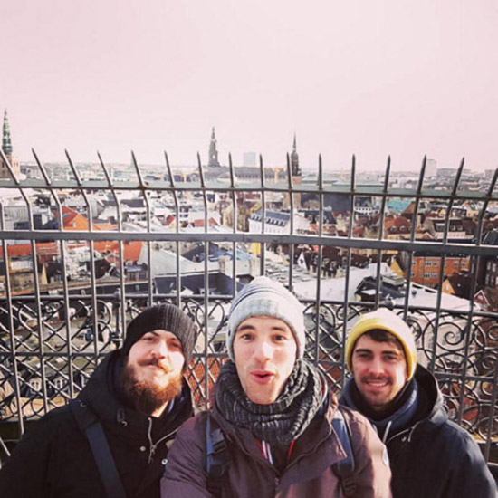
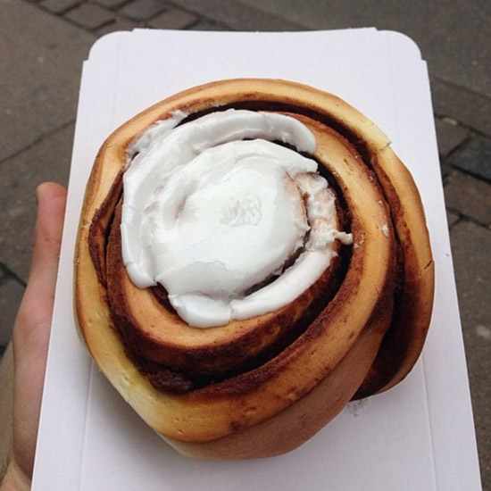
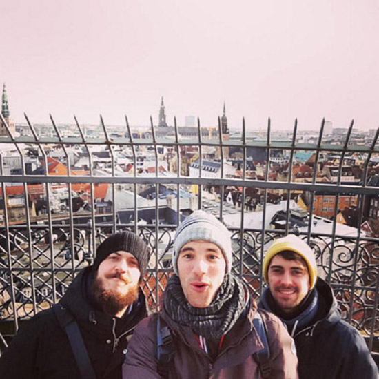

 



 



Copenhagen is full of adorable coffee shops that serve juices, sandwiches, baked goods and smoothies. The Living Room has oversized chairs and little fireplaces everywhere - the vibes are ideal.
Like the name implies, the round tower is literally just a round tower. You can climb up it for a few dollars to see a pretty view of the whole city.

Denmark is famous for its danishes - shocker, right?! Sankt Peder’s, or Saint Peter’s, has some of the best. Order a snegl (cinnamon bun) iced or sugared, and prepare for no pastry to ever compare.
The Stroget, or the Stroll, is an area of pedestrian-only shopping streets. it’s fun to walk around and people watch all the tall, blonde, and beautiful Danes. Make sure you hit Samsoe Samsoe and MOSS Copenhagen to stock up on the Danish wardrobe: black, white, gray and trendy af.

Torvehallerne means Glass Market, and once again Copenhagen is blunt with its names because this is literally a glass market. It has little stands that sell food and flowers in it and it’s really cool to see.
This trendy restaurant is in a great neighborhood and has solid pizzas. Waits can be long but it’s definitely worth it.
text here
Copenhagen’s brunch game is strong. This place has avocado toast and cappuccinos with foam art - it will make your basic heart feel right at home.
Burn off your brunch on this street that has trampolines built into the sidewalk. It will make you understand why Cope has the rep for being the happiest city.
The most famous sight in Copenhagen. This is the harbor with rainbow houses. Enough said.

The Royal Danish family lives here. More text.
The other must-try bakery in Copenhagen. Get the chocolate pastry here - it’s insane. Maybe buy two because you’ll want a second.
If you live on Mars and haven’t heard of this, it’s a public art installation where you can flip tiles on a giant wall to spell out anything your heart desires. Examples: hi mom, go blue, sorority letters, you get the picture.
This is the hippie village of Copenhagen. Weed is legal, so everyone goes here to buy and smoke. There are picnic tables, little shops, a lake, and lots of cool graffiti. Stay for the sunset, but peace before it’s really dark because it can get creepy.

text... its all good in the neighbourhood
text about bar7 text about bar7 text about bar7 text about bar7 text about bar7 text about bar7
text
text